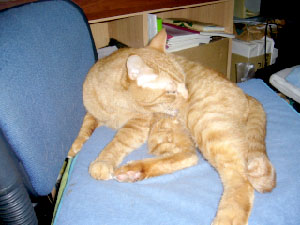
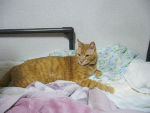
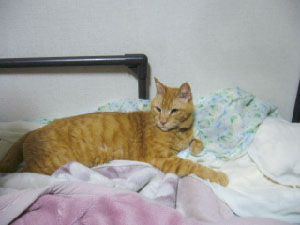

猫のページ
自分の飼っていた猫のページです。2016年01月21日に亡くなりました。
昔、僕の唯一の友達だった、ペットとして飼っていた猫です。
太って吐く猫でしたが、いつもベットの上の僕の寝る場所で寝ている、目つきがきりっとした可愛い猫でした。
写真一覧

 

2026.01.07編集
猫との生活
僕が小学校5年生の時に、新聞を見て子猫だったところを貰ってきたオスの猫。
彼は、たくさん餌を食べて、良く吐く猫だった。
家族が餌をやりすぎたのかもしれない。晩年は餌を食べるのが辛くなったので、老猫用のスープのような食事を与えていた。
食べ過ぎのせいで、いつも太っていた。
抱かれるのが嫌いで、一緒に抱いて寝たり、胸に抱いたりするとすぐに嫌がる。
だが、彼の寝る場所は自分の寝ているベッドのような場所が多く、抱かないと自分の寝ている上で良く寝ていた。「重し」になると言っていた。
彼を僕はいつも抱いて一緒に寝ようとするのだが、彼はいつもすぐに外に出てしまう。暑苦しかったのかもしれない。それの繰り返しだった。
他の猫とのバトルを庭先で良くするが、いつも弱い。「弱い猫」だった。
餌をやるのと、トイレの始末をするのを世話するが、たまに吐くぐらいで、そんなに世話を頑張ってしたわけではない。
いつもどこかでみんなのことを守ってくれていた。
かつおぶしとチーズが好きだった。
夏には毛が抜けるせいで、服やシーツを毛だらけにする。また、家の家具を爪でひっかいてバリバリにしてしまう。
吐いた時だけは、周りに居る誰かが始末する。部屋は汚くなったかもしれない。彼も辛かっただろう。
幼いころは、知らない間にどこかに吐いていることが多かった。
2016年01月21日に亡くなった。
みんなで可愛がって、幸福に生きてくれたと思う。
僕は不登校の少年だったこともあって、いつも家で僕のことを見守っていてくれた彼には特別な思い入れがある。
きっと、天国で家族を見ていてくれていると思う。天国に行った時は、彼に会うのが楽しみだ。
猫の名前を書かない理由
猫の名前を書かない理由は、猫の個人情報だからです。（決してフレイという名前ではありません。）